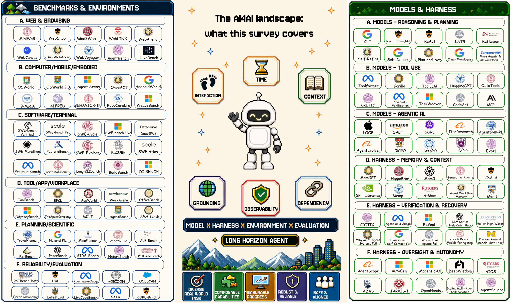
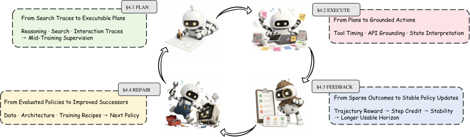

Blog · AI4AI explained · September 2026
What is AI4AI? Key findings of the AI4AI survey
A short English read-through of the AI4AI survey: what the field is, what already works, and what is still missing.
1Tongji University · 2Shanghai Jiao Tong University ·
3UC Berkeley · 4University of Chinese Academy of Sciences ·
5National University of Singapore · 6Nanyang Technological University ·
7Simple Agent Lab
*Equal contribution · †Corresponding author
This is the short version of Simple Agent Lab's AI4AI research write-up: a definition of the field, one takeaway per section, the figures and the closure table. The full article, in English and Chinese, is at simpleagentlab.com/ai4ai.
What is AI4AI?
AI4AI, AI for AI, means using AI systems to improve AI systems. An agent proposes a change to a model, a training pipeline, a harness or a benchmark, runs the experiment, reads the result, and repairs what failed. The survey treats this as a long-horizon loop with five stages, goal, plan, execute, feedback and repair, and asks one question of every system: how far can it carry that loop from an idea to a verified result on its own?
Recursive self-improvement, RSI, is the special case where the system being improved is the one doing the improving. Most of what is called self-improvement today is not that: a fixed harness, an outer search over scaffolds, or an agent editing its own code under an evaluator that humans wrote. The survey audits 35 systems against the five stages to say which paradigm each one belongs to.
AI4AI is a long-horizon loop pointed at an AI system
Each atomic skill is already strong on its own. The bottleneck is keeping the improvement loop running stably for a long time.

What separates AutoML, AI4AI, and RSI: which stages the system runs itself
Ask which of the five stages the system runs on its own. Today, no system picks its goal.
| Paradigm | Target | Self-reference | Typical closure |
|---|---|---|---|
| AutoML / NAS | architectures and hyperparameters | no | humans fix the goal and the search space; the system closes execute only |
| AI4AI | any part of an AI system | not required | the system closes plan and execute; feedback is mix under a human-written evaluator |
| Recursive self-improvement | the improvement mechanism itself | required | all four execution stages close; the goal is still given by humans |
Read the recursion ladder in full ↗
Two routes to a longer reliable horizon: model and harness
On AI4AI's long-horizon tasks, the reliable horizon is not set by the model alone: among comparable models, changing the harness can matter more than changing the model.

Why composition is less reliable than its parts
Strong parts, unreliable whole. Two mechanisms open the gap, and the failures show up in three places.
Read where the failures show up ↗
Conclusion
What AI4AI lacks is not capability. It is the authority to decide.
The eve ends the first time a system, with no human-specified goal or evaluation, has successors that reliably strengthen it. We hope this taxonomy and this audit help that moment arrive a little sooner.
If reading leaves you wanting to build: RSIHub is our open-source framework for self-evolving agents, and a place to start your own AI4AI research. Issues and pull requests are welcome.
That is the short version. The full article walks through each section, with the paper's abstract, the recursion ladder, the model and harness routes, the three places the composition gap shows up, the BibTeX entry, and a Chinese translation: read it on simpleagentlab.com.
How to cite this AI4AI survey
The survey is published on Preprints.org as doi:10.20944/preprints202608.2108.v1. The BibTeX entry is on the full article page.
← Back to Simple Agent Lab